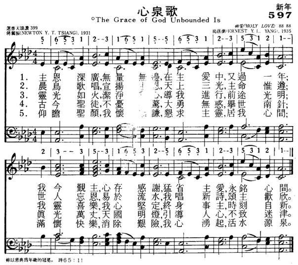

|
|
|
|
|
主恩深广 无量无边 在主爱中 又过一年 |
|
https://www.mred365.cn/szxg/7600.html

|
|
|
|
|
心泉歌（神爱调） 普498 The
Grace of God Unbounded Is
179. 心泉歌 (The
Grace Of God Unbounded Is)
調名：神爱调 HOLY
LOVE 蒋翼振詞；杨荫浏曲《圣爱》
Composer: Ernest Y. L. Yang (1931)
Published in 3
hymnals Audio files: Recording
| Text: | The Grace of God Unbounded Is |
| Author: | Newton Y. T. Tsiang |
| Translator: | Frank W. Price |
| Tune: | HOLY LOVE |
| Composer: | Ernest Y. L. Yang |
| Short Name: | Ernest Y. L. Yang |
| Full Name: | Yang, Ernest Y. L., 1899-1984 |
| Birth Year: | 1899 |
| Death Year: | 1984 |
Ernest Y. L. Yang (b. Wuxi,Jiangsu, China, 1899; d. China, 1984), served on the committee that prepared the interdenominational Chinese hymnbook Hymns of Universal Praise (1936). He wrote over two hundred hymns, including melodies, arrangements, translations, and original texts. Regarded as an outstanding musicologist in China, he is known especially for his important two-volume history of ancient music in China, Zhongkuo Gudai Yinyue Shigao (1944). A graduate of St. John's University in Shanghai and Guanghua University, Yang taught at Yanjing University, the National Conservatory of Music, and Jinling Women's University.
Psalter Hymnal Handbook, 1988
|
Texts by Ernest Y. L. Yang (6) |
As | Authority Languages | Instances |
|---|---|---|---|
| Ai zhi quan-yuan jiu-shi Shen (Fount of love, our Savior god) | Ernest Y. L. Yang (Author) | English, Mandarin | 2 |
| All people that on earth do dwell | Ernest Yang (Reviser (Chinese translation)) | English | 4 |
| Fount of love, our Savior God | Ernest Y. L. Yang (Author) | English | 6 |
| Friends of years with just one heart | Ernest Y. L. Yang (Author) | English | 3 |
| Serving God with single heart | Ernest Y. L. Yang (Author) | English | 2 |
| To the yearly seasons | Ernest Y. L. Yang (Author) | English | 2 |
| First Line: | The grace of God unbounded is |
| Title: | The Grace of God Unbounded Is |
| Author: | Newton Y. T. Tsiang (1931) |
| Translator: | Frank W. Price (1977) |
| Source: | Chinese; Hymns of Universal Praise, revised edition |
| Place of Origin: | Hong Kong |
| Language: | English |
| Copyright: | © 1977 by the Chinese Christian Literature Council Ltd., Hong Kong |
Tune Information
| Title: | HOLY LOVE |
| Composer: | Ernest Y. L. Yang (1931) |
| Place Of Origin: | Hong Kong |
| Incipit: | 56531 23165 15 |
| Key: | A♭ Major |
| Source: | Chinese |
詩歌賞析: 第179首 心泉歌* 蒋翼振詞；杨荫浏曲《圣爱》
经文：“你以恩典为年岁的冠冕，你的路径都滴下脂油”
(诗65：l1)
这首《心泉歌》一开始就点出：
主恩深广，无量无边，在主爱中，又过一年；
我今覲主，心存感谢，猛省主爱，永铭心间。
因此被列于“新年新春”应用的圣诗，非常适宜。作者是蒋翼振牧师，他写这首诗时年3O岁。
蒋翼振 (19OO一1983)是浙江诸暨人，先后在芜湖圣公会广益中学、上海圣约翰大学文学院、神学院毕业，历任广益中学、安庆圣保罗中学教职，芜湖圣雅各堂传道。l931年时为了更好地服务教会，他去北京燕京大学宗教学院进修。当时燕大的刘廷芳博士正在编辑《普天颂赞》，征求中国人自己创作的圣诗，蒋牧师即将他时常思考的问题一献心与感恩，写成这首诗应征，经编委会审阅，被选进了《普天颂赞》。六十年来一直为信徒所喜爱。这是因为这首诗中蒙召、感恩的思想非常突出，不但新年开始可以唱它，就是在平时也可以唱颂。同时这也是作者以他自己的灵性经验、生活阅历，来印证这首诗第三和第四两节，希望它也能成为每一个信徒的“活水源泉 ”：
我灵喜乐，我心坚定，终身事主，时刻自新，
仰瞻圣颜，我怀恭谦，恳求主灵，居我心间；
满怀快乐，消除艰险，我心涌起，活水源泉。
蒋翼振在燕大进修完毕后仍回芜湖，一度担任过中华圣公会宗教教育总干事一职。因他注重青年工作，在学校中曾努力推广“童子军”。1933年被全国青年协会请去协助在青岛办理全国实验夏令营工作，1937年他应聘到南京金陵神学院任职。不久南京沦陷，他带着一家九口共用了35O天往返环回，旅行了一万八千余里路程，历尽艰辛，才到达成都，使他深切感到：“人生的悲欢离合，人事的祸福变迁，都是上帝藉着痛苦来锻炼人们成为主更合用的工人。我们在诸般危险中，父神加给我们出入意料之外的平安，怎不令我感奋 !”
以后，他又率领华西大学的青年奔赴前线，为负伤将士和修筑公路的千万路工与难民服务。他曾写一首诗，说明当时的情景：
有主同行何所惧，死荫幽谷胆不寒。①
抗战胜利后，蒋翼振先回到南京，以后又北上，在燕大宗教学院、燕京协和神学院任教。他积极响应三自爱国运动，被选为北京市三自主席，全国基督教协会 (第一届)常务委员，北京市三自和教务委员会名誉主席， 1983年 11月8 日息劳归主。
曲调乃是杨荫浏 (事略参阅第 13首)特为这首诗所谱，调名《圣爱》，现在已被国内外所喜爱，若干诗集用它配到其它歌词上。假若对此调不熟悉，也可以用第352首舒曼的名曲 (CANOBURY)来唱。
①以上事实和引语见“蒋翼振著《坚苦中成长的家》一书，1950年上海协进会出版。


{kind=link}
{kind=link}